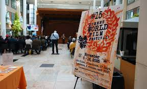

2025 Queens World Film Festival features filmmakers breakfast and ceremony honoring Warrington Hudlin
2025, November 15

2025 Queens World Film Festival features filmmakers breakfast and ceremony honoring Warrington Hudlin
2025, November 15
United States
The Queens World Film Festival took place in the Astoria area of Queens, New York City, from November 6 to 9. Screenings were held at the Museum of the Moving Image, and organizers hosted events for filmmakers, including a November 8 breakfast and an awards ceremony. A wider program is scheduled to run through November 16.A morning gathering for filmmakers occurred November 8 at Sac's Place in Astoria. Festival organizer Katha Cato introduced Brian F. Lee of City National Bank, who described the institution as "the bank to the stars." Cato said the purpose of the breakfast was to give filmmakers and financial professionals an opportunity to discuss ideas.
At the end of the event, Cato asked around the room to make sure people had learned useful things, and asked them to say what they were.
Following the breakfast was a showing of the movie The Caravan, a story about a man's road trip with others from New York City to Canada seeking to purchase affordable insulin. The film featured Doug Harris, Kathiamarice Lopez, and Sharina Martin, who also produced it. It was directed by Jefferson White. A panel, featuring Martin, Harris, White, and cinematographer Adam Volerich. Audience members were observed laughing at jokes, cheering at the end, and applauding during the credits.
Prior to the festival's opening, a press event was held on October 15. An award, known as The 2025 Spirit of Queens award was bestowed upon Warrington Hudlin.
First to speak was Harriet Tugsmen, who joked that Beyonce was introducing the event. She added, "I am a local drag performer here, in Astoria, Manhattan, Brooklyn, and sometimes internationally because I go to Jersey... Thank you all for telling stories, using your vision, your eyes, your dialog, to give an image to someone that is unheard, and please understand I'm using unheard versus voiceless, because we have our voice, a lot of people just choose not to listen." The audience applauded at that.
Katha Cato then took back the floor to discuss freedom of speech; "this is not the time to put your cameras down," before eventually introducing Queens borough president Donovan Richards Jr., who commented on Queens' diversity, "190 countries, 360 languages and dialects are spoken in this county." He went on, "We're not going to cower in fear... we're going to be proud to tell our story in Queens County."
Cato next introduced Sandra Schulberg and Donald Preston Cato. Schulberg describd Hudlin as her hero, highlighting many films, including House Party, Boomerang, and Unstoppable. She discussed his work in film preservation and archiving, stating that when working with IndieCollect in 2013, he found the lost original film cut of Gordon Parks' Solomon Northup's Odyssey, which starred Avery Brooks; the film was just restored.
Next, Hudlin spoke, first crediting his mentors, Melvin Van Peebles, who was the winner of this award in 2016, Harry Belafonte, Ossie Davis, and Ruby Dee, following with "It's not about me, it's about we," proceeding to point out many of the people who were in the audience with whom he had worked. After declaring that the new generation of filmmakers had been "anointed to tell those stories," he ended by having the audience repeat after him "We will not surrender" twice, closing with "Peace out."
After Hudlin's acceptance speech, there were two more brief speeches. The first was from Ralph Calle-Schulz of Rise Flix, which he described as a distribution company that wanted to "be known as the platform that launched the next big directors, the next big voices for the next generation." Next was Slovenian visual artist and filmmaker Nataša Prosenc Stearns, who described herself as "doing things that are hard to categorize."
The festival was scheduled to continue through November 16.